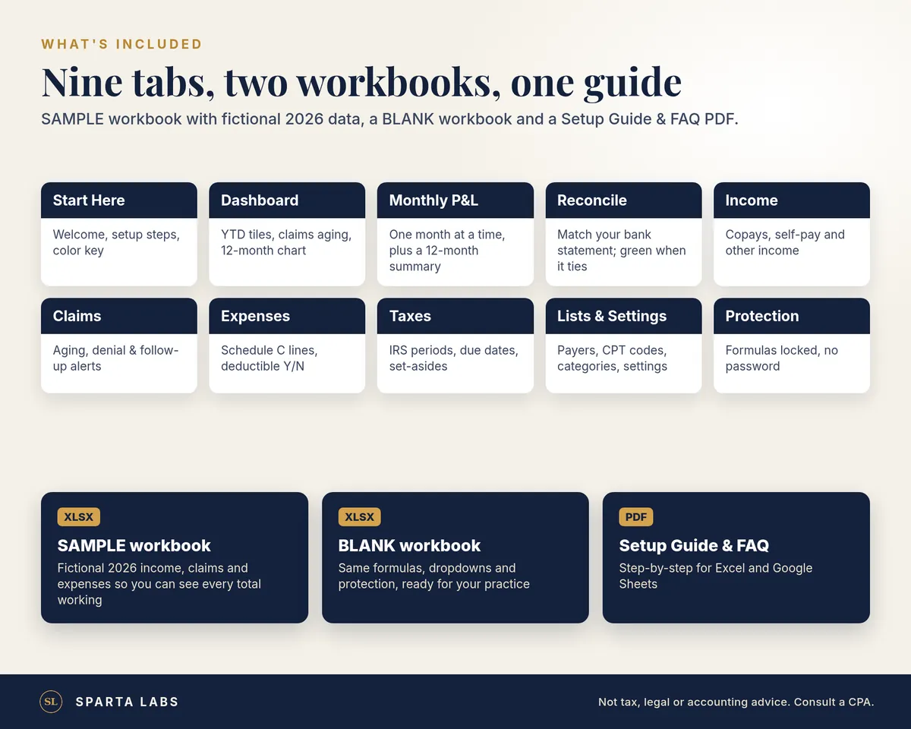
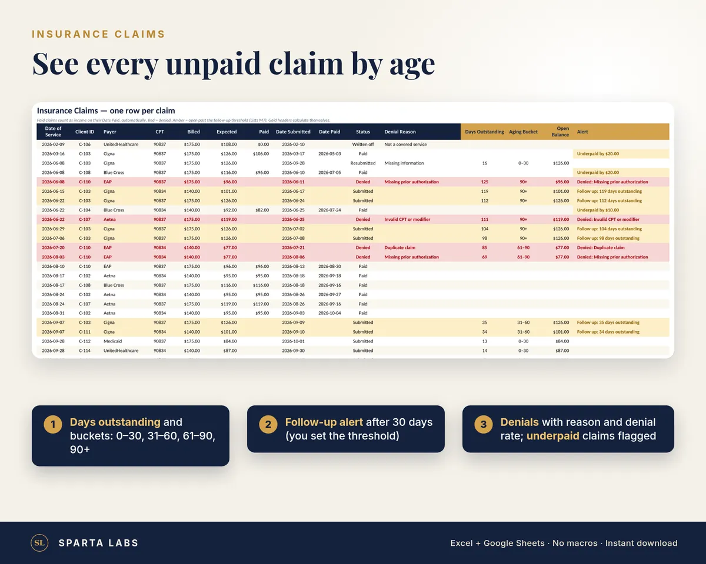
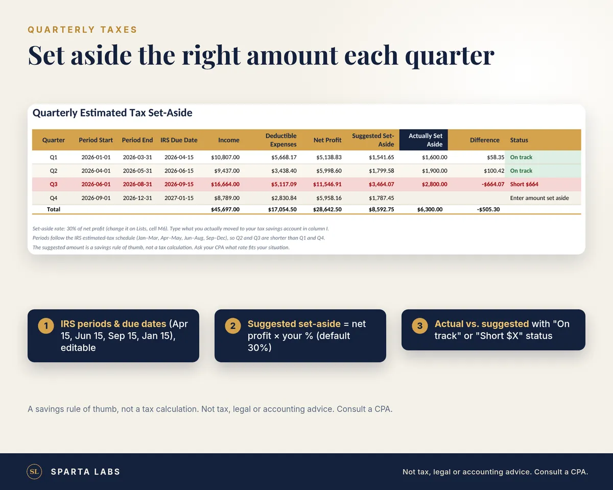
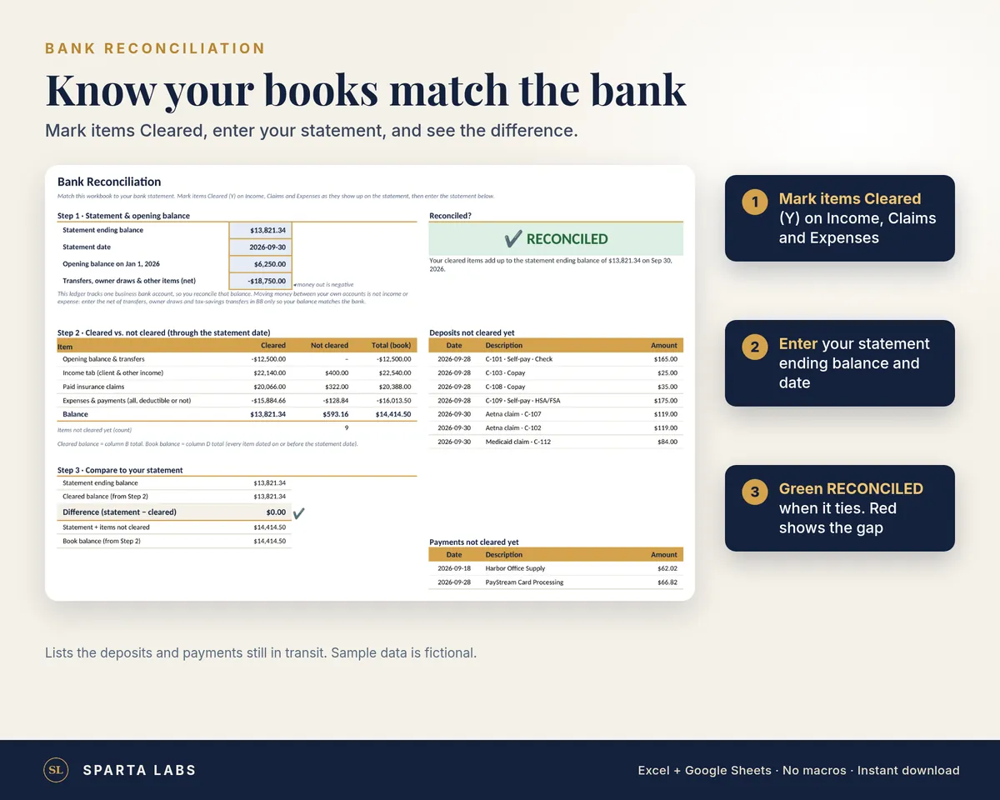

Private Practice Money Ledger
Practice income, unpaid claims, monthly profit and quarterly tax set-asides in one workbook.
Delivery: instant digital download after purchase. No physical product is shipped.
See your practice income, unpaid claims, monthly profit and quarterly tax set-asides in one place. The Private Practice Money Ledger is a protected, formula-driven workbook with nine tabs, built for solo therapists who take insurance and private pay.
- Income log: copays, self-pay and other income, by payer and method
- Paid claims count as income automatically: no double entry
- Claims aging: days outstanding, 0–30/31–60/61–90/90+ buckets, follow-up and denial alerts, underpayment flags
- Expenses mapped to Schedule C lines, with a deductible yes/no
- Quarterly tax set-aside: IRS periods and due dates, suggested vs. actual, with shortfall alerts
- Monthly P&L: pick any month for income by source, expenses by category and net profit, plus a 12-month summary
- Bank reconciliation: mark items cleared, enter your statement balance and date, and see the difference with a green/red Reconciled indicator
- Dashboard: YTD profit, denial rate, top payers, 12-month income vs. expenses chart, next tax due date
- Works with our Therapist Caseload Tracker: same client IDs and payers
- IDs only, no client names. No macros. Sample and blank versions plus a setup guide PDF
Works in Excel (Windows & Mac), Google Sheets and, on Linux, Google Sheets or LibreOffice Calc. Instant digital download. Not tax, legal or accounting advice; consult a CPA.
These are spreadsheet templates. They are not an EHR, and they are not a HIPAA compliance solution. You are responsible for how you store and protect client information.
One license per buyer; for use in your own practice.
Related questions: What should a therapy insurance claims tracker include?



